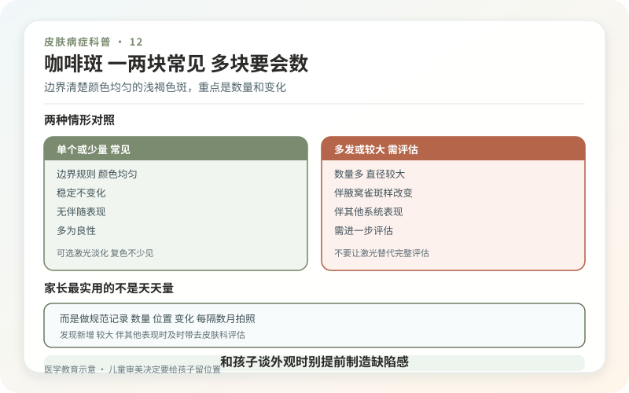
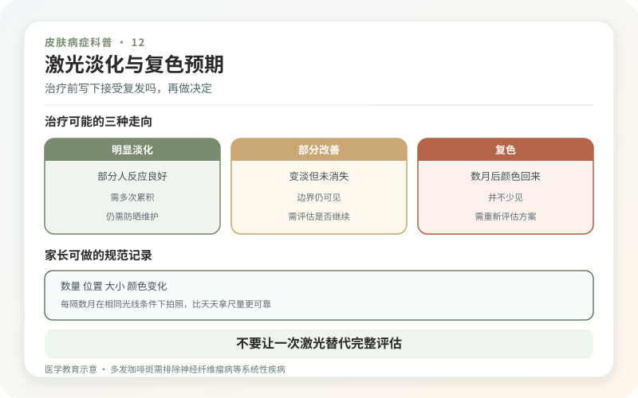

咖啡斑的名字来自“咖啡加牛奶”的颜色，医学上称咖啡牛奶斑或咖啡斑。它通常是平坦、颜色相对均匀、边界可清楚可略不规则的浅褐色斑，可在出生时存在，也可能儿童期逐渐明显。随着身体生长，斑片会按比例变大，这不一定叫恶化。
一块咖啡斑与多块咖啡斑，医学意义并不相同。很多健康人只有一两块，不需要治疗；数量较多、尺寸达到一定标准或合并其他体征时，可能提示神经纤维瘤病1 型等遗传性疾病，需要儿科、皮肤科或遗传专科综合评估。

家长最实用的不是天天量，而是做规范记录
记录孩子年龄、斑点数量、位置和大致尺寸，每半年或一年在同样光线下拍照。若出现六块或更多、青春期前直径较大的咖啡斑，腋窝或腹股沟雀斑样小点，皮肤柔软结节，视力、骨骼或发育异常，应尽早就医。诊断不能只靠咖啡斑数量，还要结合家族史、查体及随访。
反过来，一张“孩子有一块咖啡斑”的照片不足以诊断遗传病。不要因为网络清单就给家庭贴标签，也不要为了安心反复做没有指征的全套检查。

先分清它是不是咖啡斑
雀斑通常更小、日晒后明显；贝克痣多在青春期出现于肩胸背，可能伴毛发增多；先天性色素痣的表面和细胞性质不同；炎症后色沉有明确皮炎或受伤史。皮肤科可通过观察和皮肤镜判断，非典型皮损有时需要进一步检查。
颜色变杂、明显隆起、持续疼痛、破溃出血或快速改变，不符合单纯稳定咖啡斑的常见表现，应及时复诊。
激光能淡化，但复色并不少见
针对色素的激光可让部分咖啡斑变淡，但不同斑片反应差异很大：有人改善明显，有人效果有限，也有人治疗后逐渐复色。多次加大能量并不能保证永久清除，反而增加炎症后色沉、色素减退和瘢痕风险。
是否治疗主要取决于外观困扰、位置、年龄、配合度和风险接受程度。对多发咖啡斑，激光只改变皮肤颜色，不能治疗或排除背后的遗传综合征。诊断和随访不能被美容操作替代。
儿童审美决定要给孩子留位置
如果斑片不影响健康，家长可以先观察，等孩子有表达能力后共同决定。不要用“以后一定被笑”“现在不打就晚了”催促；治疗可能疼痛、结痂并需要多次，麻醉也有自身风险。选择治疗时，应由有儿童医疗和激光经验的正规团队评估。
日常做好一般性防晒即可，不需要用强效美白、祛斑药水或偏方。咖啡斑不会因为揉搓被“揉散”，腐蚀性药水却可能留下永久疤痕。
把这件事拆成两条线最清楚：数量和伴随体征决定是否需要医学评估，外观困扰决定是否讨论淡化。两条线不要互相替代。
家长可以做一份“数量—位置—变化”记录
观察咖啡斑，不需要每天测量。每三到六个月，在自然光下拍照一次，标记身体部位、最长径和新出现的斑片即可。孩子长高后，斑片绝对尺寸可能随皮肤一起增大，不能仅凭“看起来更大”判断异常。医生更关注的是数量、分布、出现时间以及是否同时存在腋窝或腹股沟雀斑样改变、皮下结节、视力或骨骼问题、发育异常和相关家族史。单独一块与多发伴体征，医学意义完全不同。
不要让一次激光替代完整评估
如果有多发斑片或其他可疑表现，先做临床判断，再谈外观治疗。把颜色打淡不会改变潜在遗传状况，也不会让后续随访失去必要性。相反，诊断尚不清楚时急着全身处理，可能遮蔽有价值的皮肤线索。需要遗传咨询并不等于已经确诊，更不等于孩子一定会出现严重问题；它只是把风险评估做得更准确。
治疗前写下“接受复发吗”
咖啡斑对激光的反应差异很大，有的明显变淡，有的改善有限，也可能重新加深。与其只问单次价格，不如问测试区观察多久、如何记录效果、复发后是否继续，以及出现色沉或色减怎么办。若孩子尚小，还要把疼痛、恐惧、麻醉和长期配合纳入收益计算。外观是可以讨论的需求，但不应被包装成必须立刻解决的健康危机。
和孩子谈外观时，别提前制造缺陷感
可以用“这是一块颜色不同的皮肤”描述，而不是反复说“赶紧去掉”。若同伴提问，准备一句简单解释就够了。是否遮盖、治疗或展示，应随年龄逐步让孩子参与。医疗能处理部分颜色问题，却不应把一个本来不痛不痒的斑，变成贯穿童年的自我否定。